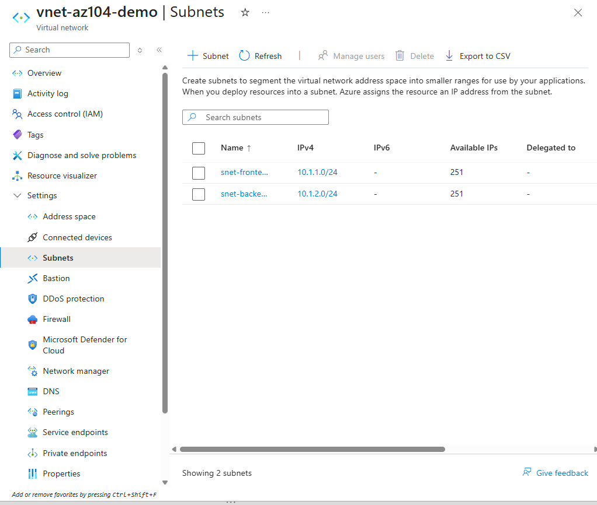
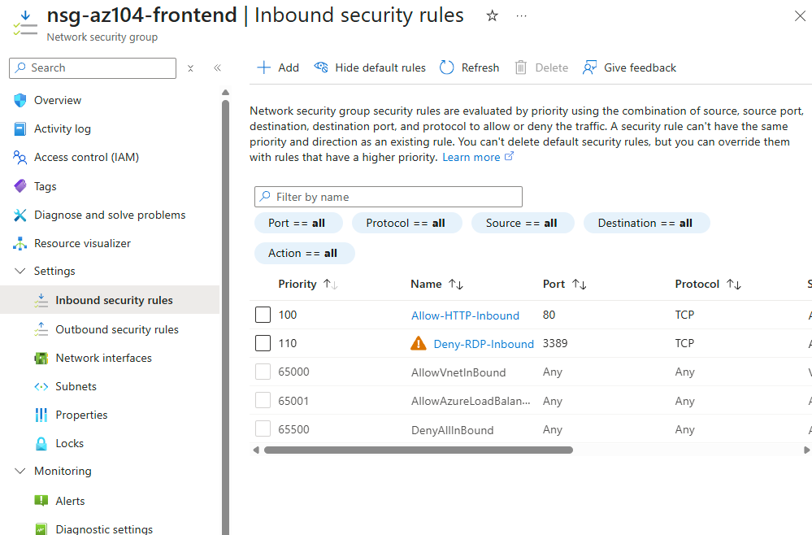
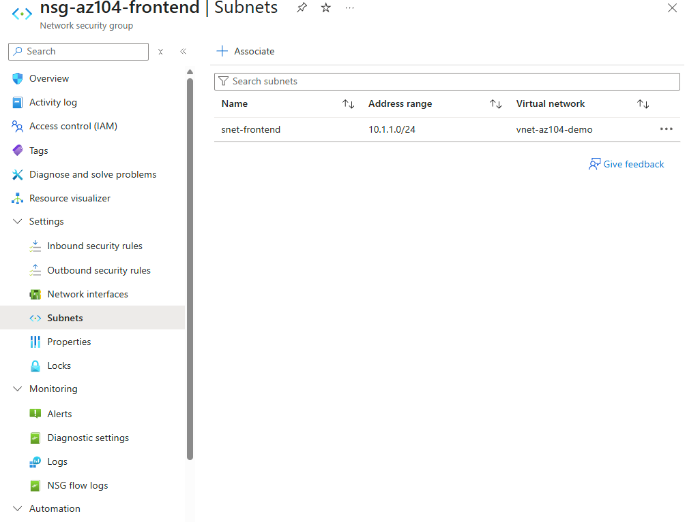
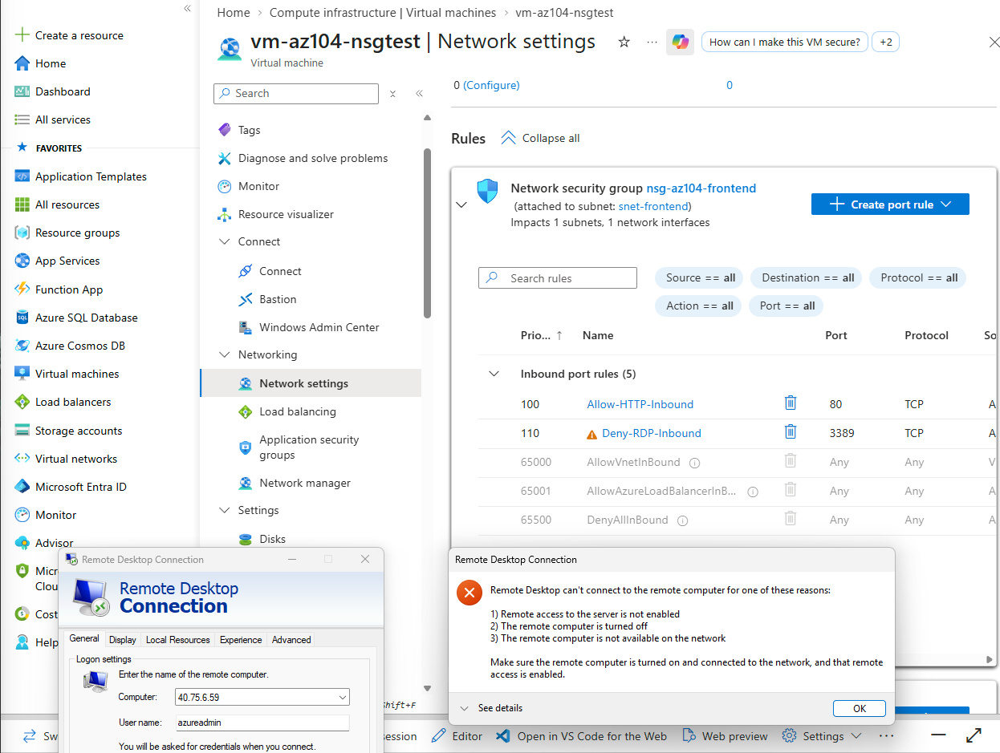

The first lab in the Networking domain: a Virtual Network with two subnets, a Network Security Group with explicit inbound rules, and a real traffic test against a deployed VM to prove the rule actually worked, not just that it looked correct in the portal. Along the way, caught and fixed a genuine misconfiguration, a rule named Deny that was actually set to Allow, which turned out to be the most valuable part of the lab.
A single flat subnet doesn't demonstrate anything about network segmentation, the actual point of using subnets at all. Splitting into snet-frontend and snet-backend from the outset, even though this lab only builds on the front-end side, sets up the natural next step for a future lab: back-end-tier rules that only accept traffic from the front-end subnet rather than from the internet directly.
Subnet-level association is the more common real-world pattern for a public-facing tier: one NSG governs every resource in that subnet consistently, rather than needing to remember to attach an NSG to every individual NIC as new VMs get added. It also made the later troubleshooting cleaner, since there was only one place the rule could actually be attached, not two possible locations to check.
A rule that looks correct in the portal is not the same thing as a rule that is actually enforced. This distinction turned out to matter directly: the Deny-RDP-Inbound rule was accidentally created with its Action field set to Allow, which the rule's name alone gave no indication of. Only a real connection attempt against a real VM exposed the mistake; reading the rule list again would not have.
Built the network, configured and associated the security rules, then proved the rules actually worked by testing against real traffic, including working through a real misconfiguration along the way.




"If you can build it again tomorrow without looking at yesterday's code, you've learned it. If you need to copy and paste it again, you've only completed a tutorial."
I am learning Infrastructure as Code deliberately, specifically Terraform and Bicep, rather than treating them as copy-paste snippets. This lab was built through the portal, so the code below is the deliberate as-code equivalent, written to understand the resource model rather than copied from a generated template. Note the Action field on the Deny-RDP-Inbound rule below, exactly the field that was wrong in the portal build; writing it explicitly in code makes that kind of mistake more visible than a form field does.
Bicep's securityRules array makes the access field a required, explicit property on every rule, the exact field that was wrong in this lab's portal build. There's no way to define a rule in code without stating Allow or Deny directly.